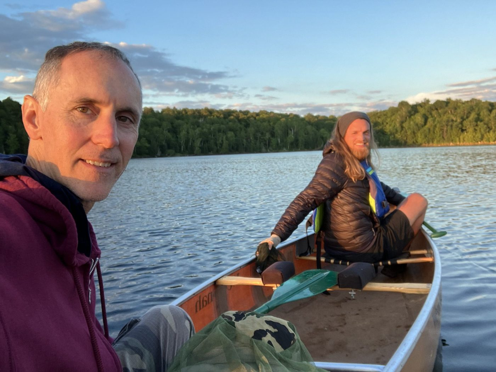

Day 1 · June 26
Approx. distance: about 5.5 miles.
Day 2 · June 27
Approx. distance: about 3 miles.
Day 3 · June 28

Approx. distance: about 13 miles.
Day 4 · June 29
Day 5 · June 30
Approx. distance: about 9 miles.
Day 6 · July 1
Approx. distance: about 11 miles.
Day 7 · July 2
Approx. distance: about 1.5 miles.